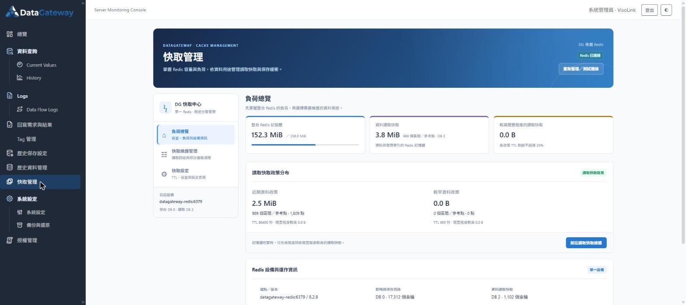

快取管理
DG 用一台專屬 Redis 存放即時資料、待保存資料與歷史讀取快取。這頁掌握容量與負荷，並依用途清理。
查看負荷總覽

- 開啟「快取管理」，確認右上角顯示「Redis 已連線」。
- 看「整台 Redis 記憶體」「資料讀取快取」「較高閒置程度的讀取快取」。
- 看「讀取快取政策分布」：近期資料政策與較早資料政策各自的用量與 TTL。
- 看「Redis 設備與運作資訊」：延遲、淘汰政策、持久化狀態。
知道 Redis 記憶體還有多少餘裕，以及讀取快取是否需要回收。
失敗時先查
- 記憶體接近上限：依 10.2 回收閒置的讀取快取。
- Redis 未連線：到「系統設定 › 系統概覽」看服務健康狀態。
快取維護管理
- 選「資料讀取快取」或「資料保存緩衝」。
- 讀取快取：在「1 選擇回收範圍」選資料政策與 TTL 剩餘比例；在「2 檢視明細與釋放」確認 Tag、資料時間與佔用空間。
- 按「預覽釋放所選區間」或「預覽釋放所有符合條件的區間」，確認後執行。
- 要一次清掉時按「清除全部讀取快取」並確認。
- 保存緩衝：可依資料點、時間篩選等待保存的資料；放棄尚未保存的資料前，畫面會要求明確確認。
回收後讀取快取用量下降；之後查詢會重新從資料庫讀取並重建快取。
放棄保存緩衝中的資料，等於這些資料不會寫入歷史資料庫，無法復原。
失敗時先查
- 回收後查詢變慢：屬正常現象，快取會隨查詢逐步重建。
快取設定
- Redis 歷史讀取快取
- 啟用／停用；停用時直接查歷史資料庫。
- 讀取快取 DB Number
- 預設 2，修改需重新啟動容器。
- 近期資料 TTL（秒）
- 24 小時內的資料，預設 86,400 秒。
- 較早資料 TTL（秒）
- 24 小時以前的資料，預設 900 秒。
- 快取區間數上限／內容上限
- 達上限時釋放較久未使用的區間。
- 修改要調整的項目，畫面下方顯示「N 項未儲存」。
- 按「儲存快取設定」。
- 按「預覽套用影響」，確認影響的服務後套用。
各項的「目前生效值」更新為新設定。
失敗時先查
- 顯示需重新啟動容器：到「系統設定 › 套用與重啟」完成套用（第 11 章）。